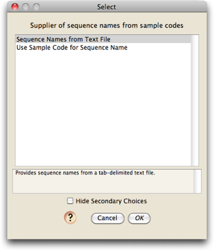
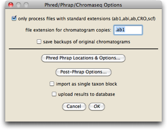

Preparing for Chromatogram Processing
Before beginning to process chromatograms, make sure you have:
- Installed Chromaseq, Phred, and Phrap
- Prepared the chromatograms
- Prepared the sample codes file and the primer information file
Workflow: the first steps in processing chromatograms
There are several ways Chromaseq can process chromatograms. You should first determine which of the following meet your needs, and begin the process by choosing the menu item mentioned:
- Process all of the chromatogram files in a directory, making base calls, contigs, and then creating matrices in a Mesquite project, one matrix for each gene, and filling the matrices with the sequences generated. This option is available under File>Open Other>Process Chromatogram Files in Directory.
- Process all of the chromatogram files in a directory, making base calls, contigs, and then appending the sequences to existing matrices in a Mesqutie project. If a matrix for a particular gene fragment doesn't exist in the project, it will be created. This option is available under Characters>Append Sequences from Chromatograms
- Process all of the chromatogram files in a directory, making base calls, contigs, but not reading the results in. This option is available under Utilities>Process Chromatograms. The Utilities menu is available when the Mesquite log window is frontmost.
- Segregate (into a subdirectory) all of the chromatogram file in a directory that meet specified critieria (e.g., that belong to a certain taxon, or that are part of a specified gene). This doesn't make base calls or contigs, it simply moves the specified files into a subdirectory. This option is available under Utilities>Segregate Chromatograms. The Utilities menu is available when the Mesquite log window is frontmost.
Your next choices
Once you ask to start the processing, you will be asked to make some choices before you get to the main processing dialog box. In particular, you will be asked to
1. Choose a file naming rule; if the appropriate naming rule hasn't already been created, you will need to create one.

2. Select a method to determine sequence names.


3. Select a text file that contains information about primers and genes.

The processing dialog
